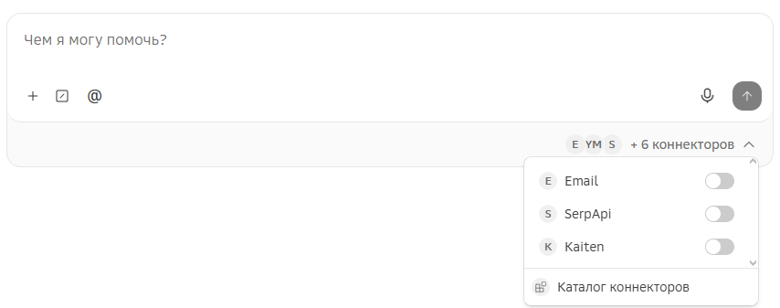
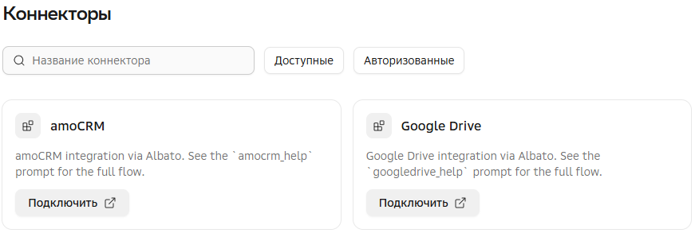
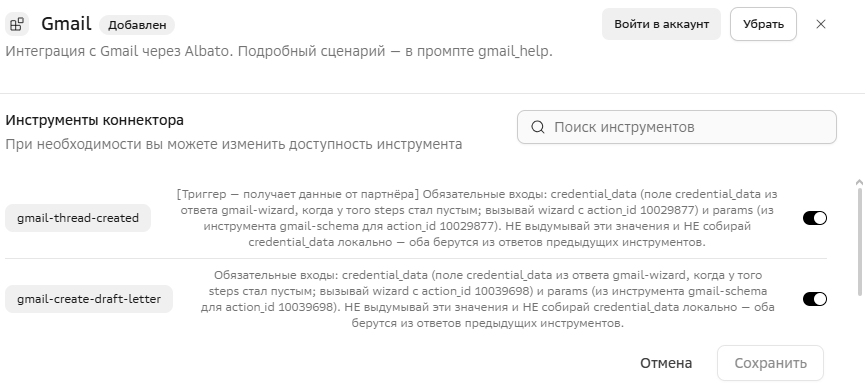

Коннекторы
Коннекторы — это инструменты для обмена данными с внешними источниками для расширения возможностей GigaCowork. С помощью них вы можете, например, найти информацию в интернете или корпоративной базе знаний, или внести данные в вашу CRM.
Использование коннектора

Для включения в чате коннекторов, нажмите на выпадающий список коннекторов в нижнем правом углу чата и включите необходимые вам.
Также система сама может предложить включить или авторизоваться в нужном коннекторе, если он необходим для выполнения задачи.
| Перед использованием коннекторов в них необходимо авторизоваться. Для обычных коннекторов система сама предложить авторизоваться в чате. Для MCP-коннекторов автоматическое предложение не предусмотрено — авторизацию нужно выполнить самостоятельно. |
Просмотр доступных коннекторов

Доступные для подключения коннекторы находятся в разделе  Коннекторы, в основном меню.
Коннекторы, в основном меню.
Вам доступны только те коннекторы, которые администратор ранее добавил в разделе  Администрирование → Коннекторы.
Администрирование → Коннекторы.
В разделе можно найти коннектор по названию и отфильтровать по признаку: Доступные — не подключенные коннекторы, в которых можно авторизоваться, Авторизованные — подключенные коннекторы, доступные в чате.
| Некоторые коннекторы могут быть уже подключены администратором и доступны для использования в задачах. Кнопка подключения у таких коннекторов недоступна. |
Возможности коннекторов
|
Коннектор наследует разрешения аккаунта внешней системы, с помощью которого в нем авторизовались. Например, если пользователь CRM может только читать карточки клиентов, то и через коннектор будет доступно только чтение — без возможности редактирования или создания. Дополнительно ограничить права коннектора можно с помощью инструментов коннектора. |
| Коннектор | Доступные операции |
|---|---|
amoCRM |
Всплывающая карточка звонка, Новый контакт, Новая задача, Новый покупатель, Заявка в Неразобранном, Обновить покупателя по ID, Новое сообщение, Получить покупателя по ID, Найти задачу, Обновить элемент списка, Получить связи сущности, Новая сделка, Звонок в Неразобранном, Новая компания, Обновление сделки по ID, Найти сотрудника по логину (email’y), Поиск контакта, Завершить задачу, Получить элементы списка, Добавить элемент в Список, Запись звонка, Новое примечание, Выбор ответственного пользователя, Добавить контакты, Обновить задачу по ID, Поиск компании, Найти лид, Получить все сделки контакта, Обновить контакт по ID, Получить элемент списка по ID, Всплывающая карточка звонка (виджет) |
Bitrix24 / Битрикс24 |
Новый лид, Сделка удалена, Комментарий в таймлайн, Найти сотрудника по ID, Зарегистрировать звонок, Прикрепить запись звонка, Новое сообщение в чате, Обновление товара, Создать элемент универсального списка, Получить контакт по сделке, Найти лид, Новый контакт, Новая компания, Обновление сделки по ID, Скрыть карточку звонка, Найти счёт по ID (Устаревший), Найти продукт, Создание списка лидов, Обновить элемент универсального списка, Добавить счет, Смарт-процесс - найти элемент по ID, Новая сделка, Найти сотрудника по email’y, Найти контакт по ID, Завершить звонок, Найти сделку по ID, Новый товар, Создание списка контактов, Найти компанию, Обновить счет (Устаревший), Найти сделку, Привязать контакт к компании, Найти счёт по ID, Обновить счет, Удалить счет, Удалить дело, Добавление настраиваемого дела, Импортировать сделку, Служба SMS: обновить статус сообщения, Обновить задачу, Создать нового пользователя, Получить стадии канбана по ID группы, Получить сведения о хранилищах, Смарт-процесс - добавить элемент, Обновить дело, Найти дело, Обновление настраиваемого дела, Импортировать компанию, Обновление лида по ID, Найти задачу, Создать рабочую группу, Добавить комментарий к задаче, Создать папку в хранилище, Смарт-процесс - обновить элемент, Добавить дело, Запустить триггер, Импортировать контакт, Найти лид по ID, Добавить задачу, Найти контакт, Создать стадию канбана, Удалить стадию по ID, Добавить файл в хранилище, Смарт-процесс - удалить элемент |
BotHelp |
Отправить сообщение подписчику, Обновить кастом поля у подписчика |
Gmail |
Отправить письмо, Создать черновик письма, Проверка только по одному входящему из почты |
Google Calendar |
Создать подробное событие, Обновить событие, Повторяющиеся события, Повторяющиеся события (весь день), Удалить событие, Создать календарь, Быстрое добавление события, Поиск события, Добавить участников на мероприятие |
Google Drive |
Добавить файл, Изменить метаданные файла по ID, Добавить комментарий к файлу, Обновить комментарий, Создать папку, Создать разрешение для файла, Создать копию файла, Создать пользовательский запрос API, Переместить файл |
Google Meet |
Запланировать встречу |
Huntflow |
Поиск соискателя, Информация о соискателе по ID, Обновить соискателя, Получить вакансии по статусу, Обновить вакансию, Добавьте соискателя или ответ соискателя к вакансии, Изменить статус приема на работу для соискателя, Создать соискателя |
Kaiten |
Создать карточку, Обновить карточку, Найти карточку по названию, Получить карточку по ID, Добавить комментарий к карточке |
RetailCRM |
Создать клиента, Обновить клиента, Поиск клиента, Поиск клиента по ID, Добавить заметку клиенту, Поиск пользователя по Email, Поиск пользователя по ID, Создать заказ, Обновить заказ, Поиск заказа, Обновление цен (бета-версия), Обновление запасов (бета-версия), Получить ассортимент, Всплывающее уведомление о вызове |
YClients |
Новый клиент, Создать запись на сеанс (для онлайн форм), Найти клиента, Получить рабочие даты салона/сотрудника, Получить свободное время сотрудника в чат, Новая запись, Удалить запись, Изменить запись, Найти запись, Получить записи клиента |
Zoom |
Создать конференцию, Добавить участника конференции, Добавить участника вебинара, Создать вебинар |
1С |
Журнал регистрации 1c-eventlog-filter-values 1c-eventlog-query Выполнение кода и запросов 1c-execute-code 1c-execute-query Метаданные 1c-get-metadata-structure 1c-list-metadata-objects Валидация 1c-validate-query |
Веб-поиск |
Поиск в интернете |
Мое дело |
Новый контрагент, Найти контрагента, Новый контрагент по ИНН, Новый счет, Найти товар, Создать заказ поставщику, Получить заказ поставщику, Редактировать заказ поставщику, Создать заказ покупателя, Обновить заказ покупателя, Поиск заказа покупателя по ID, Создать УПД, Поиск УПД |
МойСклад |
Новый заказ, Комментарий к контрагенту, Найти пользователя, Отправить событие по внешнему id звонка, Получить ассортимент, Получить расходный ордер по ID, Получить список перемещений, Получить список отгрузок, Получить контакт контрагента, Получить список контактов контрагента, Получить комплект, Новый звонок, Обновить заказ по ID, Обновить звонок по внешнему ID, Добавить товары в заказ, Получить приходный ордер по ID, Получить список инвентаризаций, Обновить заметку контрагента, Создать контакт контрагента, Кастомный API запрос, Поиск контрагента, Новый контрагент, Создать товары, Новая отгрузка, Получить список оприходований, Получить счет-фактуру полученную по ID, Получить список списаний, Обновить звонок, Обновить контакт, Найти сотрудника |
Планфакт |
Новый контрагент, Создание нового товара, Создание новой операции поступления, Создание новой операции списания, Обновить операцию перемещения по ID, Создание новой операции начисления, Создание нового счета на оплату, Создать проект, Создание сделки (Продажи), Поиск сделки, Обновить контрагента, Обновить товар, Обновить операцию поступления по ID, Обновить операцию списания по ID, Создание задания на получение документа, Обновить операцию начисления по ID, Изменение счета на оплату, Обновить проект, Обновить сделку (Продажи), Создание новой компании, Найти контрагента, Найти товар, Частично обновить операцию поступления, Создание новой операции перемещения, Найти счёт-фактуру, Найти операцию, Привязка операции к счету на оплату, Найти проект, Поиск сделки по ID, Поиск компании, Новый счёт компании, Обновить счёт компании, Поиск счёта компании |
Юздеск |
Создать тикет, Обновить тикет по ID, Найти тикет по ID, Добавить комментарий, Найти тег, Найти клиента, Отправка сообщения в чат |
Яндекс Диск |
Копирование файла или папки, Перемещение файла или папки, Очистка корзины, Получить список опубликованных ресурсов, Загрузить файл в Диск по URL, Получить ссылку на скачивание файла, Опубликовать ресурс, Создать папку, Данные о пользователе диска, Последние загруженные файлы |
Яндекс Почта |
Отправка письма по SMTP, Проверка только по одному входящему из почты |
В GigaCowork по запросу к администратору стенда можно подключить коннекторы партнеров.
| Коннектор | Доступные операции |
|---|---|
Pooling.me |
list_tenders — список тендеров с фильтрами (статус, тип перевозки, регион, тоннаж); get_tender — карточка тендера: маршрут, груз, сроки, документы, победитель; list_offers — предложения перевозчиков по тендеру; analyze_tender_offers — сравнение предложений: цена ±НДС, ранг, отклонение от рынка, рейтинг; get_carrier_risk — риск-анализ перевозчика по ИНН: светофор, факторы, AI-рекомендация; analyze_tender — аналитика тендера для перевозчика: контекст + рыночная цена; get_market_price — справочная рыночная цена ATI по маршруту; get_tender_parties — реквизиты сторон (ИНН/КПП) для допсоглашения; create_offer — подать предложение/ставку; delete_offer — отозвать своё предложение; select_winner — выбрать победителя и закрыть тендер; close_without_winner — закрыть тендер без победителя |
YClients MCP |
yclients-companies — компании и филиалы, yclients-clients — клиенты, yclients-staff — сотрудники, yclients-services — услуги, yclients-schedule — расписание, yclients-booking — онлайн-запись, yclients-records — записи и визиты, yclients-group-events — групповые мероприятия, yclients-finances — финансы, yclients-finance-period — финансы за период, yclients-analytics — аналитика, yclients-summary — сводка по филиалу, yclients-staff-workload — загрузка мастеров, yclients-payroll-statement — ведомость ЗП, yclients-loyalty — лояльность и абонементы, yclients-products — товары, yclients-inventory — склад, yclients-communications — коммуникации (SMS/email), yclients-notifications — уведомления, yclients-users — пользователи и права, yclients-personal-accounts — персональные счета, yclients-marketplace — маркетплейс, yclients-fiscalization — фискализация, yclients-telephony — телефония, yclients-reviews — отзывы, yclients-comments — комментарии, yclients-custom-fields — пользовательские поля, yclients-images — изображения, yclients-resources — ресурсы, yclients-licenses — лицензии, yclients-privacy — конфиденциальность, yclients-locations — локации, yclients-salon-chains — сети салонов, yclients-validation-tools — валидация, yclients-client-360 — профиль клиента 360°, yclients-help — справка по операциям, yclients-misc — разное, yclients-auth — аутентификация |
MCP-PROSTOR |
search_parameters — поиск параметров по части имени, get_parameter_details — полные атрибуты параметра, list_stations — объекты верхнего уровня иерархии НСИ, list_object_parameters — параметры внутри объекта, check_data_availability — проверка покрытия данными за период, get_timeseries — архив одного параметра, get_parameters_data — батч нескольких параметров, fetch_data — постраничная выгрузка данных по resource.uri, analyze_parameter — статистика и выбросы без сырых точек, refresh_catalog — сброс кэша каталога параметров |
Profitbase |
Получить список помещений (объектов) с фильтрацией по цене, статусу, проекту и типу, Получить помещение по ID, Получить историю изменений помещения, Получить количество помещений на этаже, Получить шахматку дома, Получить список ЖК (проектов), Получить список домов, Получить дом по ID, Найти дом по названию/адресу, Получить список корпусов (зданий), Добавить помещение в сделку, Удалить помещение из сделки, Обновить поля в сделке по помещению, Получить сделку по ID, Найти сделки (с фильтрацией и пагинацией), Получить очередь бронирования, Создать акцию, Получить акцию по ID, Найти акции, Изменить акцию, Удалить акцию, Создать способ оплаты (ипотека / рассрочка / 100% оплата), Получить способ оплаты по ID, Найти способы оплаты, Изменить способ оплаты, Удалить способ оплаты, Создать опцию, Получить опцию по ID, Найти опции, Изменить опцию, Удалить опцию, Получить коммерческие условия по объекту в сделке, Получить связь сделки с CRM (amo/Bitrix24/SberCRM), Получить номер договора по сделке, Найти платежи (по счёту, назначению, дому, валюте), Создать онлайн подборку |
Авторизация в коннекторе
Чтобы коннектор был доступен в задачах, в нем необходимо авторизоваться.
| Некоторые коннекторы для авторизации требуют дополнительных действий. Подробнее в главе Особенности подключения коннекторов. |
Для авторизации в коннекторе, в разделе Коннекторы, откройте коннектор и нажмите Войти в аккаунт — откроется окно авторизации, где необходимо ввести данные учетной записи внешней системы.
Так же коннектор можно подключить из выпадающего списка коннекторов в поле ввода задачи.
| Во время авторизации могут появляться всплывающие окна. Убедитесь, что ваш браузер не блокирует их. |
Настройка инструментов коннектора

Инструменты коннектора — это список его возможностей. У каждого коннектора свои инструменты, и по умолчанию все они включены. Возможности коннектора можно ограничить, выключив его инструменты.
| Инструменты предустановленных коннекторов отображаются после их добавления, инструменты созданных MCP-коннекторов отображаются после авторизации. |
Для настройки инструментов коннектора пользователем, в разделе Коннекторы откройте авторизованный коннектор и выберите:
* Включен — доступен.
* Требует подтверждения — контролируемый доступ. Система запросит использование инструмента в чате задачи.
* Отключен — недоступен.
Пользователь может настраивать только те инструменты, которые администратор включил в коннекторе, в разделе Администрирование → Коннекторы.